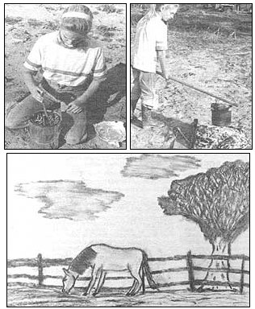

Mother's Children Homemade Drawing Charcoal
by Priscilla Bernardo
January/February 1984
MOTHER feels strongly that youths can be creative "doers'; working toward more ecological and self-reliant lifestyles . . . whether their tasks be raising chickens on a farm or maintaining rooftop container gardens in the city. To support the endeavors of our often overlooked "underage" citizens, we're glad to publish well-written articles from younger children and teenagers concerning protects they've undertaken. However, we recommend that all young authors query (that is, send us a letter telling about the story you'd like to do) before writing a full article. Address inquiries to Mother's Children, THE Mother Earth News (restricted) ; 105 Stoney Mountain Road, Hendersonville, North Carolina 28791.
I live in Florida near a small town called Branford. I'm eleven years old, and I moved to Branford when I was six. Since I came here, I have really been interested in art. In fact, it's one of my hobbies.
One day my dad and I were in an art shop. I asked Dad if I could buy some vine charcoal. All he said was, "We'll try making some of our own."
The next day, Dad told me how to make the charcoal, and I set about getting the things I needed. You know what? It was easy to do, and the homemade drawing sticks work just as well as the store-bought kind!
You can make vine charcoal, too. All you need is a long pole, a bucket, a nail, pruners, matches, firewood, and some aluminum foil.
First, you have to take your pruners and cut many pieces of vine. (Wisteria vines are best, but grapevines will do.) Pack them upright into your bucket until your bucket is full. Make sure that no vines are sticking over the rim of the bucket, because the next step is to put two sheets of aluminum foil tightly over the top of the bucket. Then take the nail and put three or four holes in the foil. (Don't put too many holes in the foil, or too much air will get inside.)
When you've done all that, take some firewood and the matches and make a fire. Be sure to have an adult supervise you when you do this part. When the fire is fairly hot, take your pole and put it under the handle of the bucket and hold the container over the fire.
Soon, you should see smoke coming out of the holes in the foil. When the smoke has completely stopped coming out of the holes, take the bucket off the fire.
The next step is very important. DO NOT REMOVE THE FOIL until the bucket has completely cooled, because if oxygen reaches the hot charcoal, the charcoal will burn away into ash. You see, charcoal is formed when wood is heated in the absence of air. That's why you have to keep the foil on.
When the bucket has cooled, take off the foil. You should then have a bunch of charcoal sticks that you can draw with.
I hope whoever decides to do this will enjoy making and using charcoal as much as I have. One bucketful of vines will make a batch of drawing sticks big enough to last a long time.
Of course, if you like to draw as much as I do, you will eventually run out of your vine charcoal. But when that happens, you can just gather up your supplies again . . . and make some more!
 TOP: Priscilla pucks some wisteria vines (no poison ivy, please!) into a bucket to begirt tire amazingly simple process of creating drawing charcoal. RIGHT: She then burns them in the sealed container until the smoke stops coming out of the holes in the foil ""lid"". BOTTOM: As Priscilla's artwork illustrates, homemade charcoal sticks work just us well us store-bought ones! |
 |
|